Equipamentos
A escolha dos equipamentos de pesca depende do tipo de peixe que você deseja capturar e do ambiente em que a pesca será realizada.
Tanto os peixes de escamas quanto os peixes de couro têm suas próprias características que influenciam a seleção dos equipamentos.
Os principais equipamentos recomendados para cada tipo são:
Equipamentos para Peixes de Escamas
Esses peixes incluem espécies como robalos, tilápias, dourados e sardinhas, e a escolha do equipamento dependerá do tamanho e do tipo de peixe que você busca.
Equipamentos Recomendados
Varas de Pesca:
Varas de ação média a rápida são ideais para capturar peixes de escamas de tamanho médio a grande.
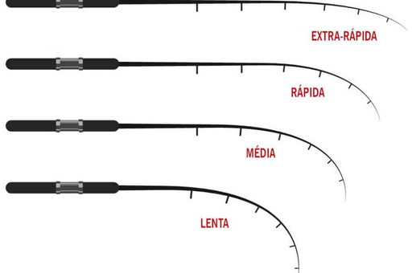
Linhas de Pesca:
Linhas monofilamento ou multifilamento. A espessura da linha dependerá do tamanho do peixe, linhas mais finas para peixes pequenos e linhas mais resistentes para peixes maiores.
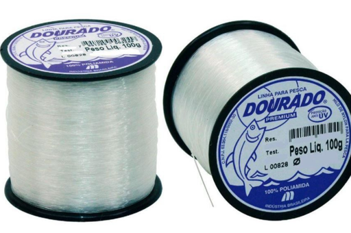
Iscas:
Iscas artificiais, como plugs, funcionam bem para peixes predadores como robalos e dourados. Para peixes menores e onívoros, como tilápias, iscas naturais são uma boa escolha.
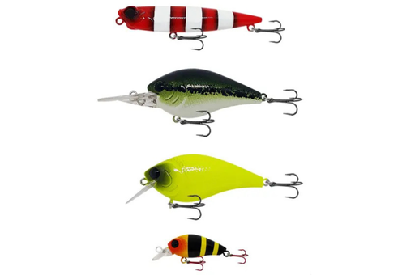
Carretilhas:
Carretilhas de tamanho médio são recomendadas para peixes maiores.
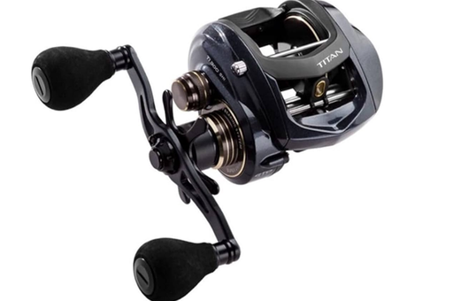
Anzóis:
O tamanho e o tipo de anzol variam com o tipo de peixe. Anzóis menores para tilápias e maiores para dourados ou robalos.
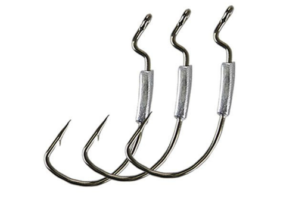
Equipamentos para Peixes de Couro
Peixes de couro incluem bagres, cascudos, surubins e piramboias, que são conhecidos por suas lutas intensas e, em alguns casos, por terem tamanhos maiores.
Equipamentos Recomendados
Varas de Pesca:
Varas de ação média a pesada são necessárias para pescar peixes de couro.
Linhas de Pesca:
Linhas multifilamento são preferíveis pela sua resistência e menor elasticidade, permitindo fisgadas mais firmes em peixes grandes.
O uso de monofilamento também é possível, mas em diâmetros maiores.
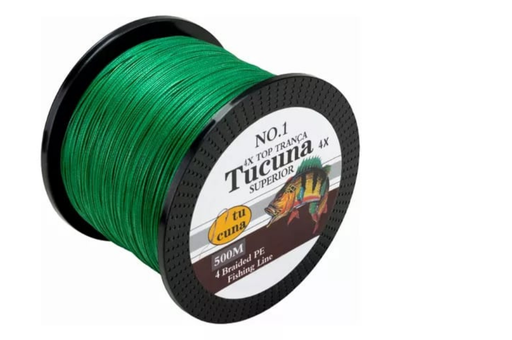
Iscas:
Iscas naturais, como minhocas. Alguns peixes de couro, como bagres, são atraídos por iscas de cheiro forte.
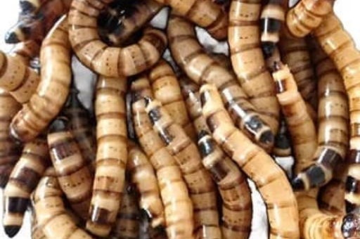
Carretilhas:
Carretilhas de perfil alto e com boa capacidade de linha são ideais para suportar peixes grandes e lutas prolongadas.
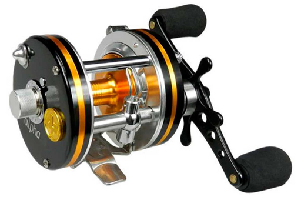
Anzóis:
Anzóis grandes e resistentes são importantes para capturar peixes de couro, que geralmente têm bocas maiores e mais poderosas.
Chumbadas:
Dependendo do ambiente, como leitos de rios profundos, o uso de chumbadas pesadas ajuda a manter a isca no fundo, onde muitos peixes de couro se alimentam.
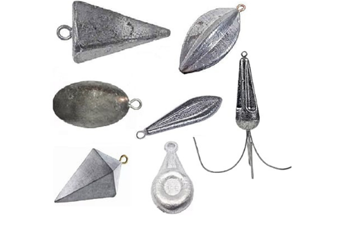
Dicas Gerais
Manutenção do Equipamento:
Como peixes de couro podem ter uma pele resistente e espinhos, é importante manter anzóis afiados e linhas em bom estado para evitar rupturas.
Segurança e Conforto:
O uso de luvas é recomendado ao manusear peixes de couro devido à presença de espinhos ou placas ósseas que podem machucar.
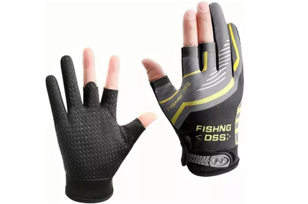
Acessórios Extras:
Um alicate de pesca é útil para remover anzóis com segurança, especialmente em peixes de couro com bocas mais duras e dentadas.
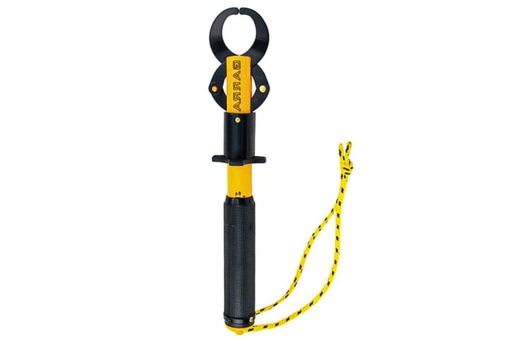